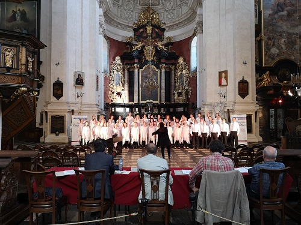
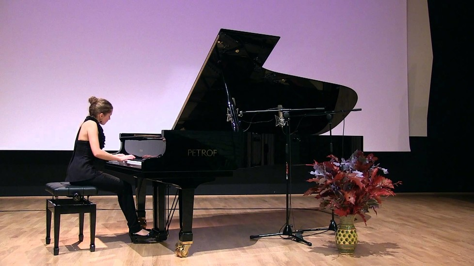
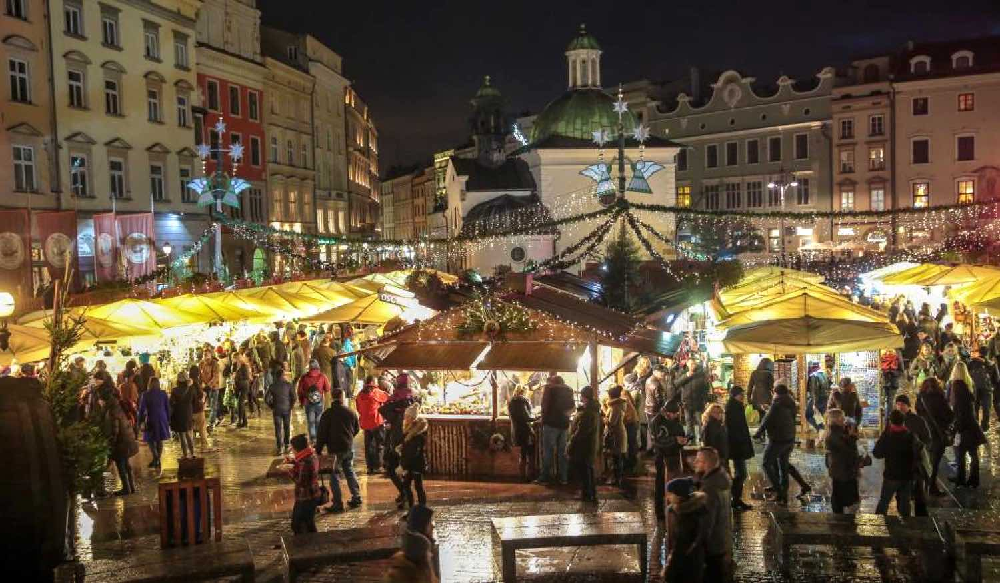

January 6: epiphany
The holiday commemorates the Biblical visit of the Three Magi to little Jesus soon after he was born.
The streets are filled with vibrant parades, most popular ways of celebrating the holiday.
Recreate the procession in which the Magi arrived to Jesus, and it is done in grand fashion. The actors ride on camels, or in a less exotic manner, on horses, while paaing out sweet treats to the children.
Families gather on the routes to watch the fairtale-like show.
February: shanties
Known as the "Shanties", the festival celebrates classic sailing songs during four days of concerts performaed by 40 singing groups from Poland and around the world.
The songs, which often borrow melodies and rhythms from local folk music traditions, own their history to when sailors had to chant in unison to pull up anchor or change the direction of a sail.
Started in 1981, Krakow's international Sailing Songs Festival remains one of the largest, attraching more than 11,000 people annually.
April: misteria paschalia
The festival's formula is based on the presentation of carefully selected music related to Holy Week and Easter, performed by recongnised artists and outstanding performers of early music.
Misteria Paschalia is today one of the most recongnisable and important European festivals focusing on Renaissance and Baroque music.
The main idea is to present a programme focused on a specific cultural circle and characteristic aesthetics of its performance of early music.
May: photomonth
This annual month-long event is one of the largest photograghy festivals in Europe, filling Krakow's best glleries, cafes, museums, cultural centres, and even more unique locations like public parks, private flats and post-industrial spaces, with dozens of individual and collective photo exhibitions.
The festival's ShowOFF section premieres artists making their professtional debuts, while FRINGE section aims to blow up the accepted conventions about art and art spaces.
June 8: corpus christi
On the eighth Thursday after Easter, a public holiday, richly adorned altars appear around midday at the head of grand processions down the central streets of Poland's cities and villages.
The Solemn holiday of the Body and Bloos of Christ - Corpus Christi - has been celebrated by the Catholic Church in Poland since 1247, and first mentions of a procession come from records in the Diocese of Krakow from 1320.
June: Dragon Parade
One of Krakow's most unique and enjoyable annual events, the Great Dragon Weekend is organised by Groteska Theatre and inspired the city's most famous legend.
Two days of colourful pageantry, large-scale puppetry and family fun, the weekend consists of two main events: Saturday nigth's light and sound spectacular in which giant dragons float down the Wisła, followed by Sunday afternoon's parade of colourful beasts created by children.
June: Jewish Cultural Festival
The Jewish Culture Festival in krakow is one of the most important and largest event of its kind in the world.
The Festival is a span of a symbolic bridge where Poles and Jews meet to strengthen the process of understanding and reconciliation. The Jewish Cultural Festival in Krakow is, after all, a symbol of tolerance, pluralism and the faith that we all have a chance, through the celecration of Jewish culture and the celebration of life, to build mutual relations based on truth and respeact.
Festival not only introduces the living Jewish tradition to a wide audience, but also offers a share of the joy in creating that tradition. Workshops in Hasidic dance and song, Klezmology, Hebrew calligraphy, Jewish paper cutting and cooking, conducted by representatives from both the Ashkenazi and Sephardic cultures which attract numerous students. Every year, the Festival puts on more than 100 separate events featuring dozens of performers and thousands of participants from all over the world.
June: krakow film Festival
The Krakow film festival is an annual international film festival that takes place in Krakow, Poland. it is one of the oldest film festival in Euorpe dedicated to documentray, short and animated files.
The festival is primarily focuses on documentray films, but it also includes short films, animations and other forms of non-fiction cinema. It provides a platform for filmmakers from all over the world to present their work and engage with audiences and industry professionals.
June: Wianki
Wianki, also known as the Festival of Wreaths, is an annual cultural and music event that takes place in krakow.
Wianki is deeply rooted in Polish traditions and folklore particularly associated with the celebration of Midsummer night, also know as the Feast of St.John the Baptist. The festival signifies the arrival of summer and is celebrated on the shortest night of the year,around June 21st.
The festival features a variety of activities and attractions including live music performances by popular Polish and international artists, both contemporary and traditional. These are also dance shows, art installations, street performances, and cultural exhibitions showcasing local traditions and crafts

June: cracovia cantans
Cracovia Cantans is a renowned international festival of classical music that takes place annually in Krakow, Poland.
Cracovia Cantans is dedicated to promoting and showcasing classical music, particularly choral and vocal works. The festival brings together renowned soloists, choirs, orchestras and conductors from around the world.
The festival was established in 1983 and has since gained a reputation as one of the leading classical music events in Poland and Europe. It is organised by the Krakow Festival Office and attracts both local and international audiences
July: Summer Jazz Festival
The summer Jazz Festival in Krakow, Poland, is an annual music event that celebrates the rich and diverse world of jazz.
The festival showcasea a wide range of Jazz, fusion , avant-garde, and more. It serves as a platform for both established jazz musicians and emerging talents.
The festival was first organised in 1996 and has since become one of the leading jazz events in Poland and Europe. It has earned a reputation for its high-quality performances and diverse lineup.
August: Krakow live festival
The Krakow live festival is a multi-day event that showcases a diverse lineup pf local and international musical acts. The festival primarily focuses on popular music genres, including rock, pop, indie, electronic and more
In addition to the main stage performances, the Krakow Live Festival often includes other activities such as DJ sets, workshops, art installations< and food and drink stalls. These elements contribute to a vibrant and immersive festival experience.
August: Krakow live festival
The Pierogi Festival in Krakow, Poland, is a popular annual event celebrating the beloved Polish dumplings known as pierogi.
The Pierogi Festival is dedicated to showcasing the various types, flavors, and fillings of pierogi, which are a staple of Polish cuisine. The festival highlights the cultural significance and culinary artistry associated with this traditional dish.
During the festival, you can expect to find an extensive selection of pierogi, including both traditional and creative variations. These dumplings can be filled with various ingredients such as meat, cheese, potatoes, mushrooms, cabbage, fruits, and even sweet fillings like berries or chocolate.
September: Dachshund Parade
he Dachshund Parade is dedicated to dachshunds, also known as sausage dogs or wiener dogs. It's a gathering of dachshund owners and enthusiasts who come together to celebrate the breed's unique characteristics and have a joyful time.
The parade is open to dachshund owners and their furry companions. Participants dress up their dachshunds in costumes or decorative accessories, making the event even more colorful and entertaining. Visitors are also welcome to join and watch the parade.
In addition to the parade, the event may include various activities and contests related to dachshunds. This can include costume contests, talent shows, games, and agility demonstrations, adding an extra element of entertainment to the celebration.
September: Krakow film music festival
The Kraków Film Music Festival is dedicated to showcasing and honoring film music, including original scores, soundtracks, and compositions created for movies and television. The festival brings together renowned composers, orchestras, and performers from around the world.
The festival offers a diverse program of concerts, film screenings, and special events. It includes live performances of film music accompanied by screenings of iconic movies or TV shows. The festival often features both classic and contemporary film scores, paying tribute to the rich history of cinematic music.
The festival takes place at various venues in Kraków, including concert halls, theaters, and cultural institutions. These venues are carefully selected to provide an exceptional acoustic and visual experience for the performances.
September: Sacrum Profanum
Sacrum Profanum is a renowned contemporary music festival that takes place in Krakow, Poland.
Sacrum Profanum is dedicated to promoting and showcasing contemporary music, particularly avant-garde, experimental, and boundary-pushing compositions. The festival aims to bridge the gap between classical and contemporary music, presenting innovative works by both established and emerging composers.
The festival usually takes place over several days or weeks, with events scheduled throughout the year. The specific dates and ticket information can be found on the official website of Sacrum Profanum. It is advisable to check for updates and book tickets in advance, as certain performances may have limited seating capacity.

October: International Royal Cracow Piano Festival
The International Royal Cracow Piano Festival celebrates the piano as a solo instrument and highlights the skill and interpretation of renowned pianists. The festival presents a wide range of musical styles, from classical repertoire to contemporary compositions.
The festival features a series of piano concerts performed by acclaimed pianists. These performances showcase the virtuosity and musicality of the artists, presenting solo recitals, chamber music collaborations, and piano concertos accompanied by orchestras.
The festival takes place at various concert halls and cultural institutions in Krakow, such as the Krakow Philharmonic Hall, the Krakow Academy of Music, or historic venues known for their acoustics and atmosphere.
October: Unsound Festival
Unsound Festival is known for its innovative and adventurous programming, exploring various genres of electronic and experimental music, as well as audiovisual and interdisciplinary arts. The festival aims to push boundaries, challenge conventions, and showcase cutting-edge artists and performances.
The festival takes place in various venues across Krakow, including concert halls, theaters, clubs, and unconventional spaces. These locations are carefully chosen to provide unique atmospheres and enhance the overall experience of the performances.
The festival usually takes place over several days or weeks, with events scheduled throughout the year. The specific dates and ticket information can be found on the official website of Unsound Festival. Due to its popularity and limited capacity at certain venues, it is advisable to check for updates and book tickets in advance.
October: Conrad Festival
The Conrad Festival celebrates literature and promotes contemporary writing from Poland and around the world. It honors the legacy of the renowned Polish-British writer Joseph Conrad, whose works continue to inspire and influence writers globally.
The festival takes place at multiple venues in Krakow, including cultural institutions, theaters, bookstores, and other literary spaces. These locations are chosen to create an engaging and intimate atmosphere for the literary events.
The Conrad Festival usually takes place over several days or weeks, with events scheduled throughout the year. The specific dates and ticket information can be found on the official website of the Conrad Festival. It is advisable to check for updates and book tickets in advance, especially for popular events.
October: Jazz Autumn
Jazz Autumn focuses on promoting and celebrating jazz music in all its forms. The festival showcases a variety of jazz styles, including traditional jazz, contemporary jazz, fusion, Latin jazz, and more.
The festival features performances by renowned jazz musicians and ensembles, both from Poland and abroad. These performances take place at various venues in Krakow, such as concert halls, jazz clubs, and cultural institutions.
Jazz Autumn typically takes place over several days or weeks, with events scheduled throughout the festival period. The specific dates and ticket information can be found on the official website of Jazz Autumn or by checking local event listings closer to the desired festival dates.

November 1:All Saint's Day
All Saints' Day, also known as "Wszystkich Świętych" in Polish, is a significant holiday in Poland and is observed on November 1st each year.
All Saints' Day is a solemn holiday that honors and remembers all the saints and martyrs recognized by the Catholic Church. It is a day to pay respects to the departed and to remember deceased loved ones.
All Saints' Day is an important holiday in Poland, and Krakow's cemeteries become a place of reflection, solemnity, and community during this time. It is an opportunity for people to honor their ancestors, remember the saints, and contemplate the circle of life and death.
November 11: Independence day
Independence Day, known as "Narodowe Święto Niepodległości" in Polish, commemorates Poland's independence regained on November 11, 1918, after over a century of partitions and foreign rule. It marks the end of World War I and the restoration of an independent Polish state.
Independence Day is a time of national pride and patriotism in Poland. In Krakow, various events and activities take place to honor the historical significance of the day. These may include parades, ceremonies, concerts, exhibitions, and cultural performances.
One of the notable events on Independence Day is the Independence March (Marsz Niepodległości). This march gathers participants from various backgrounds who come together to celebrate the country's independence. It is a significant and highly attended event in Krakow.
November 11: Etiuda & Anima International Film Festival
The Etiuda & Anima International Film Festival focuses on two main sections: Etiuda and Anima. The Etiuda section showcases short films made by students and emerging filmmakers, while the Anima section is dedicated to animated films from around the world.
The festival has a long-standing tradition and has been organized since 1994. It has gained international recognition and has become one of the leading film festivals in Poland and Europe for student films and animated cinema.
The festival presents a diverse selection of films, including short fiction films, documentaries, and animated works. These films often explore various themes, styles, and techniques, offering a rich cinematic experience to the audience.

December: Christmas Market
The main Christmas Market in Krakow is typically held in the historic Old Town, specifically in the central square known as Rynek Główny (Main Market Square). This picturesque location adds to the charm of the market.
The Christmas Market in Krakow usually starts in late November or early December and runs until the end of December.
Visiting the Christmas Market in Krakow is a wonderful way to immerse yourself in the holiday spirit, enjoy traditional Polish delicacies, find unique gifts, and experience the local traditions and customs associated with Christmas.
December 31: New Year's Eve
The focal point of New Year's Eve celebrations in Krakow is the historic Main Market Square (Rynek Główny). The square comes alive with a large outdoor gathering, live music performances, and a festive atmosphere.
Fireworks displays are a highlight of the New Year's Eve celebrations in Krakow. The skies over the city are lit up with colorful fireworks, and people gather in the Main Market Square and other vantage points to watch the dazzling spectacle.
Krakow's nightlife scene comes alive on New Year's Eve, with many bars, clubs, and restaurants hosting special events and parties. From live music performances to DJ sets, there are plenty of options to dance the night away and celebrate the arrival of the new year.
December: Silent Film Festival
The Silent Film Festival focuses on showcasing classic silent films from the early days of cinema. It provides a platform to appreciate the beauty, innovation, and historical significance of silent films.
The festival is typically held in various venues across Krakow, including cinemas, theaters, and cultural centers. These locations provide an appropriate setting for the screenings and performances, creating a nostalgic atmosphere reminiscent of the early days of cinema.
The festival also highlights the importance of film preservation and restoration. It may feature screenings of restored silent films, showcasing the efforts to preserve these cinematic treasures for future generations.